1060F10 fuel injectors
- Path
- Procedures > 10 ENGINE > 1060 DIESEL FUEL INJECTION > 1060F injectors and lines > 1060F10 fuel injectors
- Kind
- repair procedure (removal / refitting; the operation number is the code)
- Applies to
- engines: 1.9 JTD 8v , 1.9 JTD 16v, 2.4 JTD 10v, 2.4 JTD 20v; all production periods
- Interactive page
- https://sloeber94.github.io/elrnDB-a156/en/#/3237800
Applies to: engines: 1.9 JTD 8v , 2.4 JTD 10v; all production periods
 Removing
Removing
 Refitting
Refitting1060F36 lines to injectors - r r
Disconnect the electrical connections from the injectors.
 | Name | Connector |
|---|---|---|
2C | Injector |
1. Manually push springs (1a) and disconnect the fuel return pipe for lubricating the injectors (1b) from the injectors
2. Undo the nuts on the brackets securing the fuel injectors with their washers.
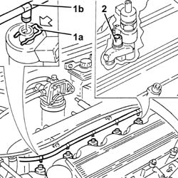
Applies to: engines: 1.9 JTD 8v , 2.4 JTD 10v; all production periods
1. Remove the fuel injectors (1a) complete with fixing brackets (1b) with the tool (1c).
 | Name | Country |
|---|---|---|
- | Extractor | 1.870.739.000 |
Remove the injector bracket support pads.
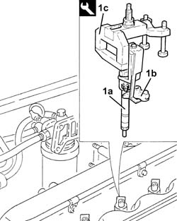
Applies to: engines: 1.9 JTD 8v , 2.4 JTD 10v; all production periods
Refitting
RemovingRefit the fuel injectors in their seatings.
Refit the fuel injector brackets in their seatings and tighten the nuts to the specified torque.
 | Fastening | Component | Ø | Value (daNm) |
|---|---|---|---|---|
- | Nut | INJECTORS(DIESEL) | M8 | 2.6 - 3.2 |
Position the connectors for the fuel return pipe for lubricating the injectors in the corresponding housings of the injectors and fully insert them until the click of the spring is heard.
Connect the electrical connections to the injectors.
Applies to: engines: 1.9 JTD 16v; all production periods
Removing
RefittingProceed with removal 1016A10 sound-proofing cover - r + r
Ensure that the ignition key is in the OFF position, then disconnect the negative battery terminal (-).
| Name | Connector |
|---|---|---|
- | Battery |
1. Disconnect the electrical connections from the injectors.
| Name | Connector |
|---|---|---|
1 | Injector |
2. Disconnect the electrical connection from the cam angle sensor.
| Name | Connector |
|---|---|---|
2 | Timing sensor |
3. Disconnect the electrical connection for the air conditioning compressor.
| Name | Connector |
|---|---|---|
3 | Air conditioning compressor "on" electromagnet |
Release the electrical wiring from the band on the timing cover.
4. Undo the bolts fastening the cable duct and move the electrical wiring aside.
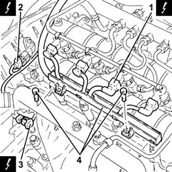
Applies to: engines: 1.9 JTD 16v; all production periods
1. Push clips (1a) by hand and disconnect the pipe from the injectors to the fuel recovery manifold (1b), injectors side and move it aside.
2. Undo the connectors (2a), (2b) and remove the pipe from the fuel manifold to the injectors (2c).
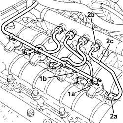
Applies to: engines: 1.9 JTD 16v; all production periods
1. Undo the nuts fixing the injector brackets.
2. Remove the injectors (2a) complete with bracket using the tool (2b).
| Name | Country |
|---|---|---|
2b | Extractor | 1.870.897.300 |
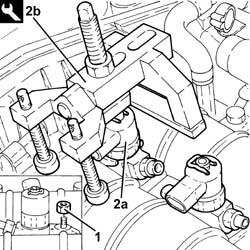
Applies to: engines: 1.9 JTD 16v; all production periods
Refitting
Removing1. Refit the injectors (1a) complete with brackets and secure by tightening the nuts (1b) to the specified torque.
| Fastening | Component | Ø | Value (daNm) |
|---|---|---|---|---|
1b | Nut | INJECTORS(DIESEL) | M8 | (Camshaft housing side 23 28 |
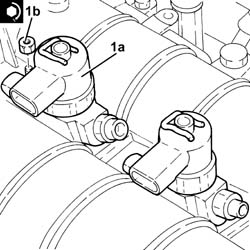
Applies to: engines: 1.9 JTD 16v; all production periods
1. Fit the new pipes from the fuel manifold to the injectors and secure them using the connectors without tightening them.
2. Tighten the connectors for the pipes from the fuel manifold to the injectors, injector side, to the recommended torque using a suitable spanner.
| Fastening | Component | Ø | Value (daNm) |
|---|---|---|---|---|
2 | Connector | FUEL MANIFOLD LINE TO INJECTORS | M12 | (Injector side 22 24 |
3. Tighten the connectors for the pipes between the fuel manifold and the injectors, fuel manifold side, to the recommended torque using a suitable spanner.
| Fastening | Component | Ø | Value (daNm) |
|---|---|---|---|---|
3 | Connector | FUEL MANIFOLD LINE TO INJECTORS | M12 | Fuel manifold side 22 24 |
4. Connect the pipe from the injectors to the fuel recovery manifold (4a) to the injectors pushing it until the clips (4b) can be heard clicking into place.
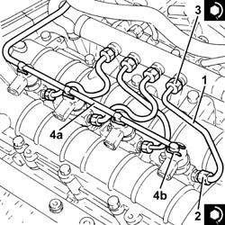
Applies to: engines: 1.9 JTD 16v; all production periods
Place the electrical wiring back in its housing and tighten the cable duct fixing bolts.
Fasten the electrical wiring using the band on the timing cover.
Connect the electrical connection to the air conditioner compressor.
Connect the electrical connection to the cam angle sensor
Connect the electrical connections to the injectors.
Connect the negative (-) battery terminal
Proceed with refitting 1016A10 sound-proofing cover - r + r
Applies to: engines: 2.4 JTD 20v; all production periods
Removing
RefittingEnsure that the ignition key is in the OFF position, then disconnect the negative battery terminal (-).
| Name | Connector |
|---|---|---|
- | Battery |
Proceed with removal 1016A10 sound-proofing cover - r + r .
1. Disconnect the electrical connection from the cam angle sensor.
| Name | Connector |
|---|---|---|
1 | Timing sensor |
2. Undo the bolt (2a) and remove the cam angle sensor (2b).
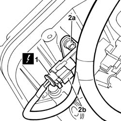
Applies to: engines: 2.4 JTD 20v; all production periods
1. Undo the connectors (1a), (1b) and remove the pipes from the fuel manifold to the fuel injectors (1c).
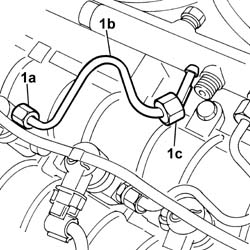
Applies to: engines: 2.4 JTD 20v; all production periods
1. Disconnect the electrical connections from the injectors.
| Name | Connector |
|---|---|---|
1 | Injector |
2. Undo the bolts fastening the cable duct and move the electrical wiring aside.
3. Manually push the springs (3a) and disconnect the pipe from the injectors to the fuel recovery manifold (3b), injectors side and move it aside.
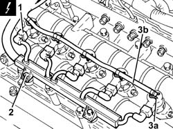
Applies to: engines: 2.4 JTD 20v; all production periods
1. Undo the nuts fixing the injector brackets.
2. Remove the injectors (2a) complete with brackets using the tools (2b) and (2c).
| Name | Country |
|---|---|---|
2b | Extractor | 1.870.739.000 |
| Name | Country |
|---|---|---|
2b | Extractor | 1.870.897.300 |
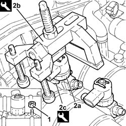
Applies to: engines: 2.4 JTD 20v; all production periods
Refitting
Removing1. Refit the injectors (1a) complete with brackets and secure by tightening the nuts (1b) to the specified torque.
| Fastening | Component | Ø | Value (daNm) |
|---|---|---|---|---|
1b | Nut | INJECTORS(DIESEL) | M8 | (Camshaft housing side) 3.0 |
Applies to: engines: 2.4 JTD 20v; all production periods
1. Fit the new pipes from the fuel manifold to the injectors and secure them using the connectors without tightening them.
2. Tighten the connectors for the pipes from the fuel manifold to the injectors, injector side, to the recommended torque using a suitable spanner.
| Fastening | Component | Ø | Value (daNm) |
|---|---|---|---|---|
2 | Connector | FUEL MANIFOLD LINE TO INJECTORS | M12 | (Injector side) 2.0 |
3. Tighten the connectors for the pipes between the fuel manifold and the injectors, fuel manifold side, to the recommended torque using a suitable spanner.
| Fastening | Component | Ø | Value (daNm) |
|---|---|---|---|---|
3 | Connector | FUEL MANIFOLD LINE TO INJECTORS | M12 | (Fuel manifold side) 2.0 |
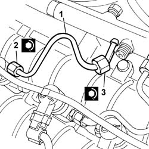
Applies to: engines: 2.4 JTD 20v; all production periods
Connect the pipe from the injectors to the fuel recovery manifold to the injectors pushing it until the clips can be heard clicking into place.
Place the electrical wiring back in its housing and tighten the cable duct fixing bolts.
Connect the electrical connections to the injectors.
Place the cam angle sensor back in its housing and fix it using the bolt.
Connect the electrical connection to the cam angle sensor.
Proceed with refitting 1016A10 sound-proofing cover - r + r .
Connect the negative (-) battery terminal.
Topics linked from this page (7)
- 1016A10 sound-proofing cover - r + r
- 1060F36 lines to injectors - r r
- 5530B10 battery - r+r
- A1B Battery ( BATTERY NEGATIVE )
- K47 Timing sensor
- L20 Air conditioning compressor "on" electromagnet
- N70 Injector
Topics that link to this page (9)
- B10 ENGINE DOES NOT START / UNDER NO CIRCUMSTANCES
- B16 ENGINE STARTS WITH DIFFICULTY'
- B20 ENGINE STARTS, AND CUTS OUT STRAIGHT AWAY
- D04 ENGINE NOT RUNNING SMOOTHLY
- D10 ENGINE IDLE IRREGULAR
- D21 ENGINE CUTS OUT WHILST DRIVING
- W05 WHITE EXHAUST FUMES
- W11 EXCESSIVE EXHAUST FUMES'
- X01 EXCESSIVE FUEL CONSUMPTION